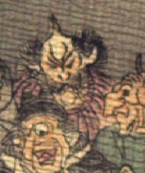

鬼。頭頂は禿げ、長い角が1本生えている。側頭部から髪がもじゃもじゃと生えている。額に皺が寄り、目は釣りあがっている。口ひげ、頬ひげを生やし、口をへの字に結んでいる。赤い着物を身に着けている。
著作者：J.Dautremer／出典：親書誌：U426_nichibunken_0123：Le vieillard et les démons／日付：2006／資源識別子：U426_nichibunken_0123_0002_0010
Copyright (c)2010- International Research Center for Japanese Studies, Kyoto, Japan. All rights reserved.